Brief
This python program is a pasta bar ordering system. It is designed so that users will be able to easily place an online order. There will be an option to add to their order, delete from their order as well as editing it along the way. At they end they will finalise the order, choose whether or not they want delivery or pickip and enter their customer details. We are using the menu from the local Wellington pasta resturant, 1154.
Starting Project Backlog
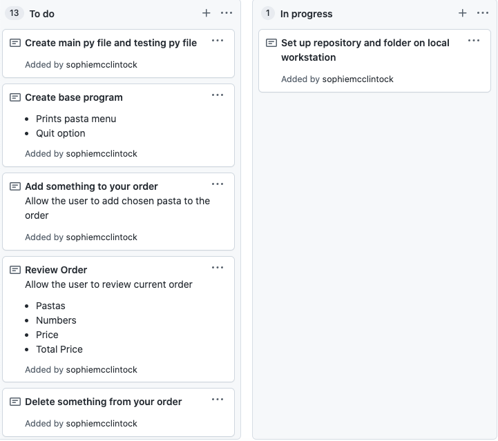Version One
This version is ensures that the main program is working correctly and we can print the pasta menu as well as quit the program. This is a really important step as it is setting up all the basics so that when it starts to get more complicated, we can always refer back to this.
Plan
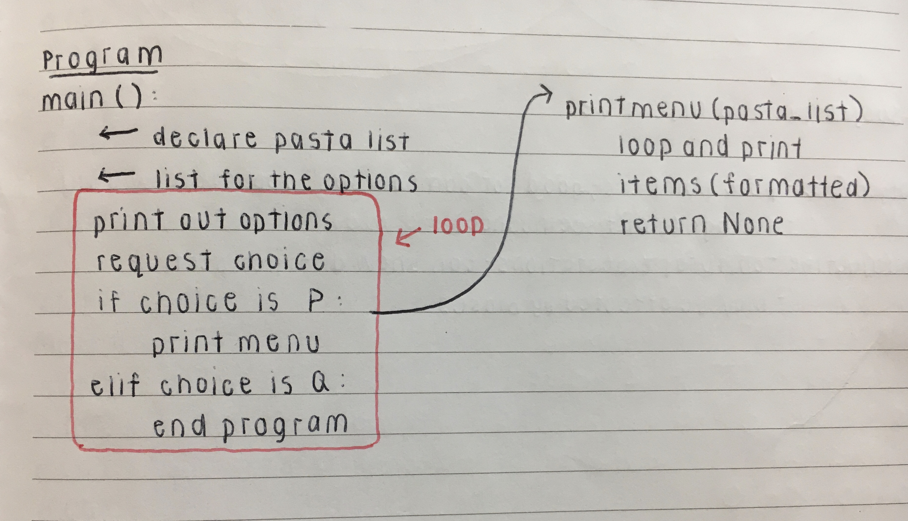Sprint Board
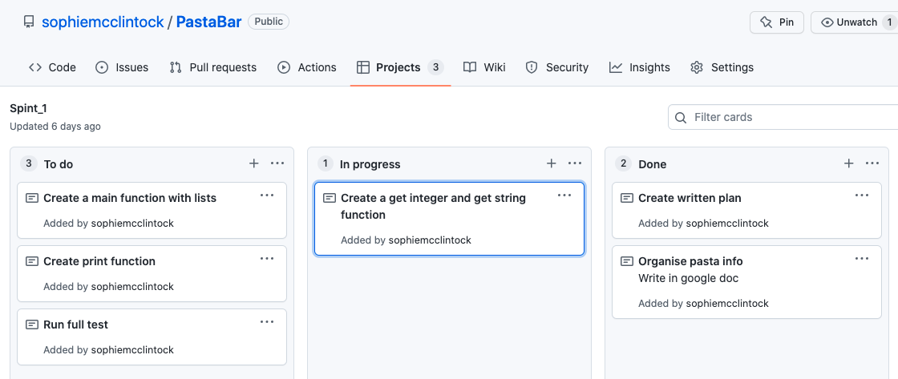Test for Sprint One
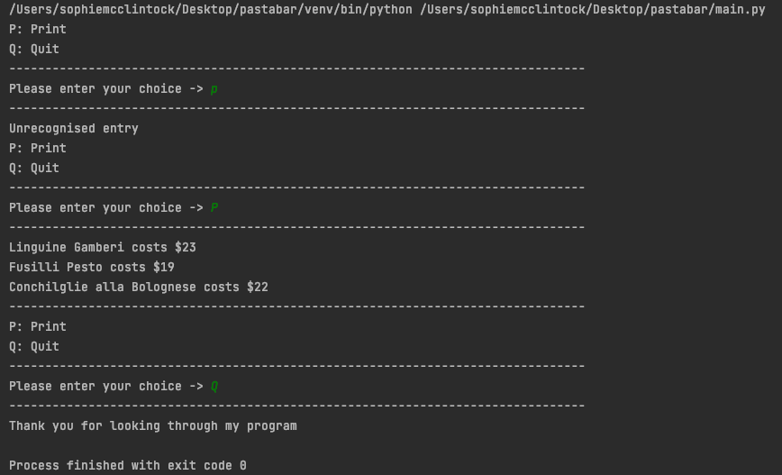Reflection
This is just the basic form of the program, using this the user is able to print the order list and quit the program. At the moment I am choosing to use three different types of pasta's to make it easier to work with but at the end I plan to add some more different types of pasta's. For the next sprint, I will make a function the means the user can add to their order. This function is not validated yet so that is something I will also have to work on in the upcoming sprints.
Describing Relevant Implications
Usability
The usability relevant implication is making sure the user can intuitively learn how to complete the program quickly. This means ensuring the options are easy to understand and it is easy to find appropriate actions. If they want to add something to their order or delete something from their order, they are able to find a function for each of those that will guide them through it. It also means making sure the program has error prevention methods and communicates to the users about these methods. For example, if the user prints 'z' where a Y or N is required, it prints our an error message like 'Unrecognised entry'.
Functionality
The functionality relevent implication requires making sure the program works properly. This means that is does not crash, if the incorrect value is entered the program either sorts it out itself or sends back an error message. I also need to make sure it does not do incorrect arithmetic, like when it is adding up the total cost for all the pasta's added to the user's order. The last thing I want to ensure is that the variables (lists) are all reset once the order is complete. This is important because it means if the user wishes to place another order, they will not have issues with the previous order interfering with the second order.
Sustainability and Future Proofing
The sustainability and future proofing relevant implication is making sure the program is able to be updated, new features can be added easily. It also means ensuring that the progam can be handed over to another developer who can understand it quickly. This is important because if the program is passed around others need to be able to understand it otherwise it is effectively useless.
Version Two
This version incorporates my sprint 2 and 3. Sprint 2 allows the user to add a certain amount of pasta to your menu, while Sprint 3 allows the user to review what they have added to their order. Obviously it is important to be able to add to your order but it is also really important to be able to review what you have added to your order so you decide if it is correct or you want to change it.
Plan
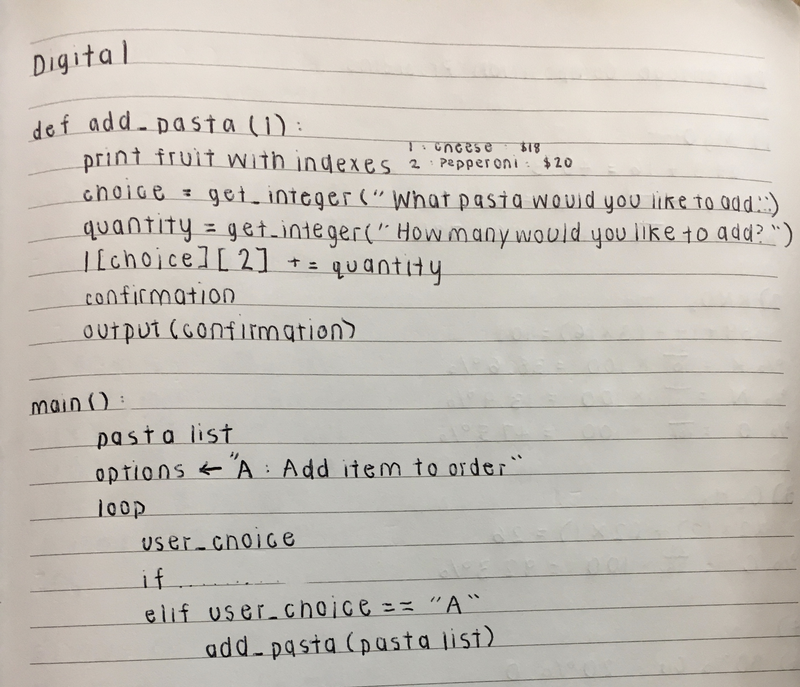Sprint Board
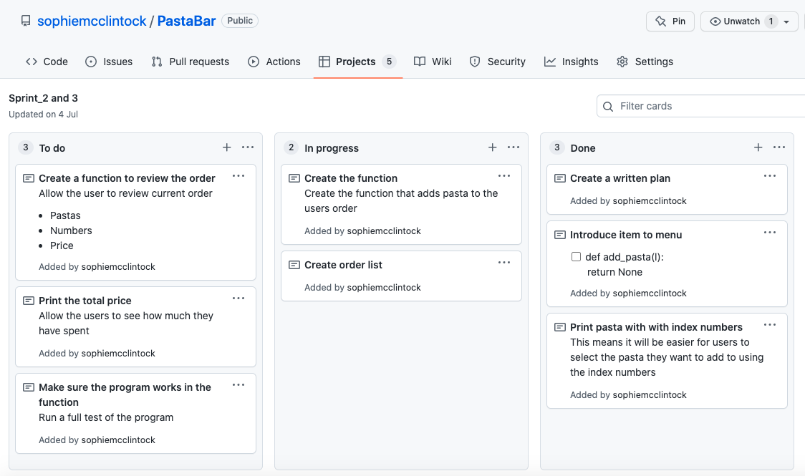Tests
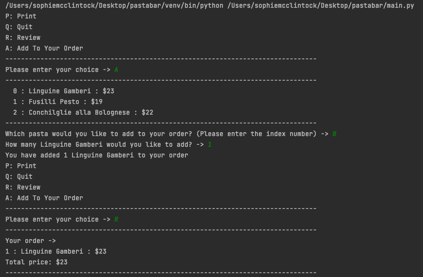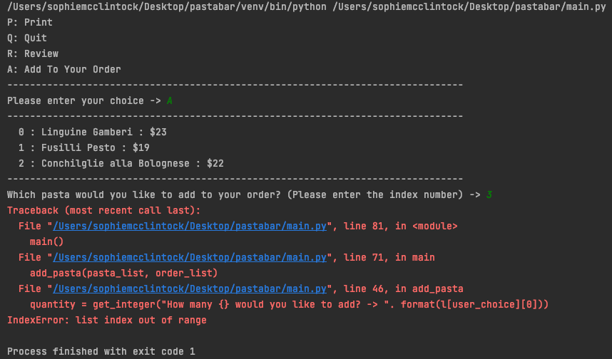
The first test is what happens when the user enters the correct details, it works and you can double check what you have ordered by reviewing the order. For the second test you can see it has crashed and the reason for this is because I entered a number that was not an index number of one of the pastas. To improve this, I would need add validation so the system recognised when the input is not valid.
Reflection
One thing I did learn is that you can't rely too much on your written plan, you will have to change things but you just have to be flexible. The functions I have added in this version mean the user can add a certain number of pastas to their order and review their order. Orginally, for this version I intended to just make the adding function but I ended up including the review function because it was an easy way to check if the correct quantity of the correct pasta had been added to my order. For the next sprint I am going to add the function to delete items from the users order. Again, nothing in this program has been validated yet so this is the biggest problem I have at the moment.
Version Three
This version allows the user to delete something they have already added to their order. This is important because it means if they incorrectly typed in a number or they change their mind, it is easy to change.
Plan
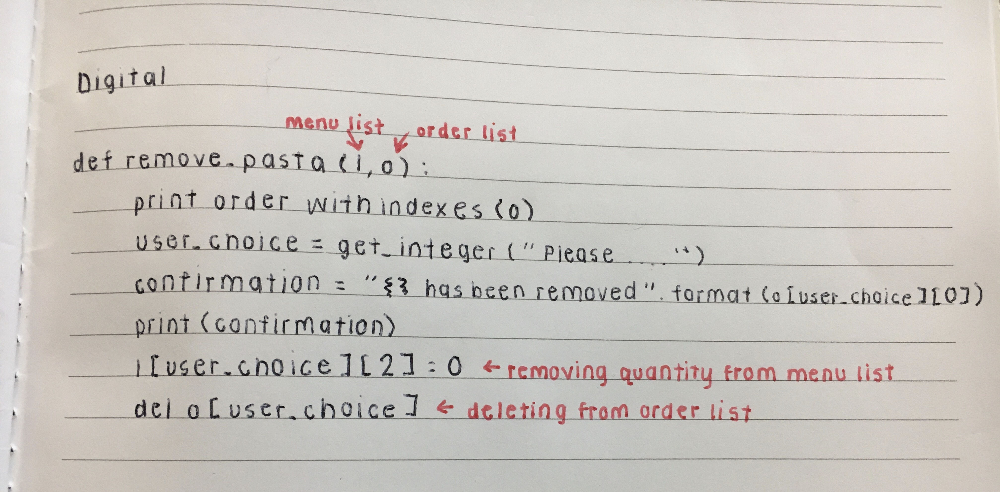Picture of Sprint Board
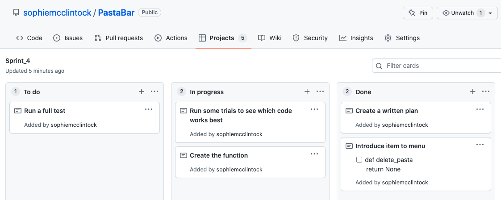Tests
For this sprint, I used a testing page because there were a couple of different ways I could do it. Below you can see one of my test fails. This failed because the user could not see their order and the subsequent index numbers connected to the order, so they entered an index number that was out of range and not applicable. This was the reason I decided to add a review order function to this version. You can also see the method I decided to use and my final test.
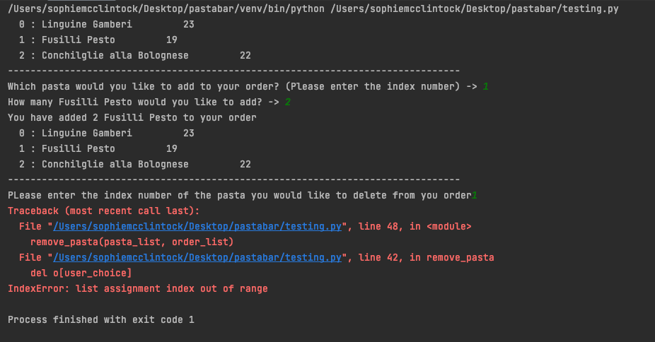
Here is the final test in my full program
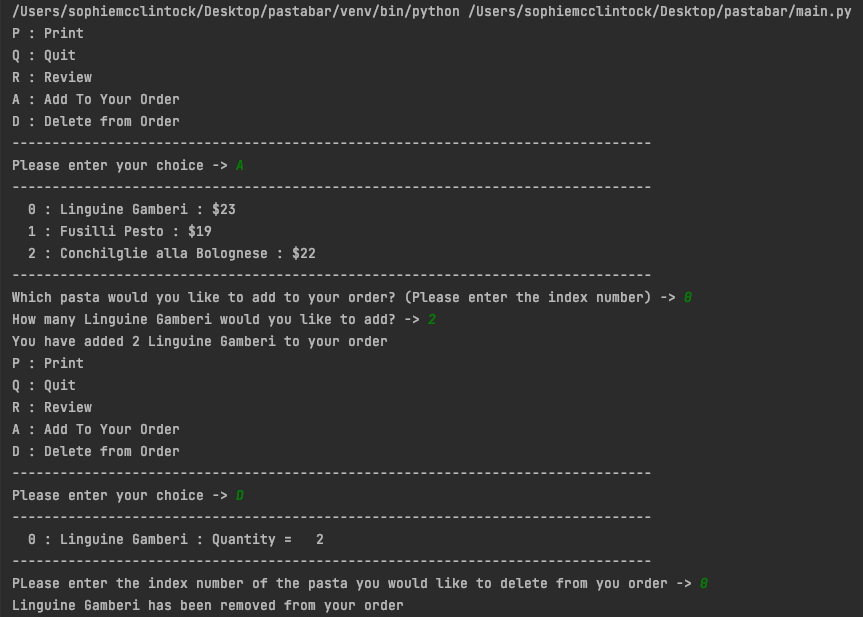Reflection
During my work on this version I learnt that it is a good idea to use a testing page because it means you can trial some different options and chose the one that works. You can see evidence from this in my planning above. At the completion of this version the user is now able to delete pasta that they have already added to their order. This makes it easy if they change their mind during placing the order or make a mistake, it is easy the remove it and replace it with something different. Unfortunately, something that this version does not do is that it does not allow you to change the quantity of the pasta, either add to it or subtract from it, so that will be my plan for the next version. Again, a long term issue that needs solving is the validation. Currently, if I enter the incorrect index number it crashes and this, obviously, is not ideal for a program. I think my plan at the moment is to finish adding the major functions, then work on validating them all.
Version Four
This version allows the user to edit the amount of the items they have already added to their order. For example, if someone has added 4 of a paticular pasta but they made a mistake and wanted to add 5 instead, they can easily change it.
Plan
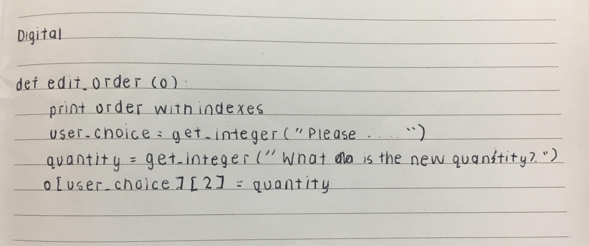Sprint Board
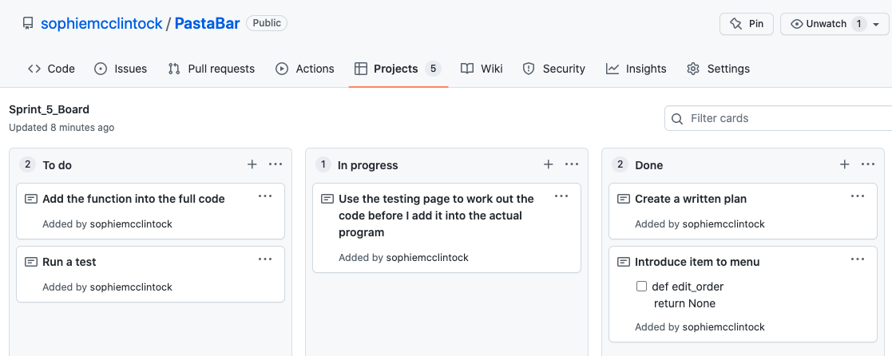The final code for the function
def edit_order(o):
print_order_with_indexes(o)
print("-" * 80)
user_choice = get_integer("What pasta would you like to edit? (Please enter the index number) -> ")
quantity = get_integer("What would you like to change the quantity of {} to? The current quantity is {} -> ".format(o[user_choice][0], o[user_choice][2]))
o[user_choice][2] = quantity
confirmation = "You now have {} {}".format(o[user_choice][2], o[user_choice][0])
print(confirmation)
Tests for the final code
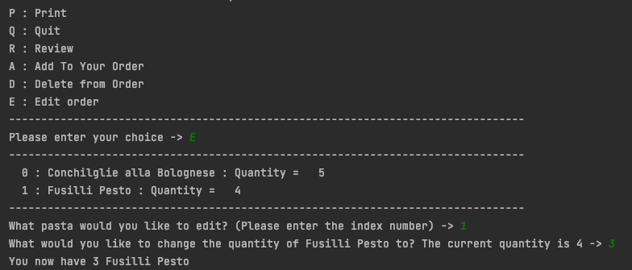Reflection
This version was probably one of the easier ones for me because it was just changing the quantity in the order list, I did not have deal with two lists like some of the others. This is a really important steo because it means if users make just a small mistake and type in the wrong number when they are entering in the quantity, it is really easy to change. I also did it in a way which means I don't have to have two seperate functions for adding to the quantity and subtracting from the quantity, it is just the same function. This makes the program a lot less complicated in general. Next version I am going to start validating all my previous functions, the adding and deleting ones as well as the reviewing one and the editing one. This will make it a lot easier to use and mean that if the user does make a small mistake, the program will not crash and it will be easy to recover. One thing that might become a problem to users in the future is that the menu could potenially be quite hard to understand. For example, the two options, 'deleting from order' and 'editing order' might be difficult for users to distingush between. This is hopefully just something I can fix in the next version by a using a different name that will more clearly explain what the different functions do.
Version Five
This version focuses on validation because for all my functions so far this has been the biggest problem, that it is not validated and this is an issue that needs fixing. I know I might need to do some more validating in the later stages but I wanted to do some know so there was not much of a backlog.
Plan
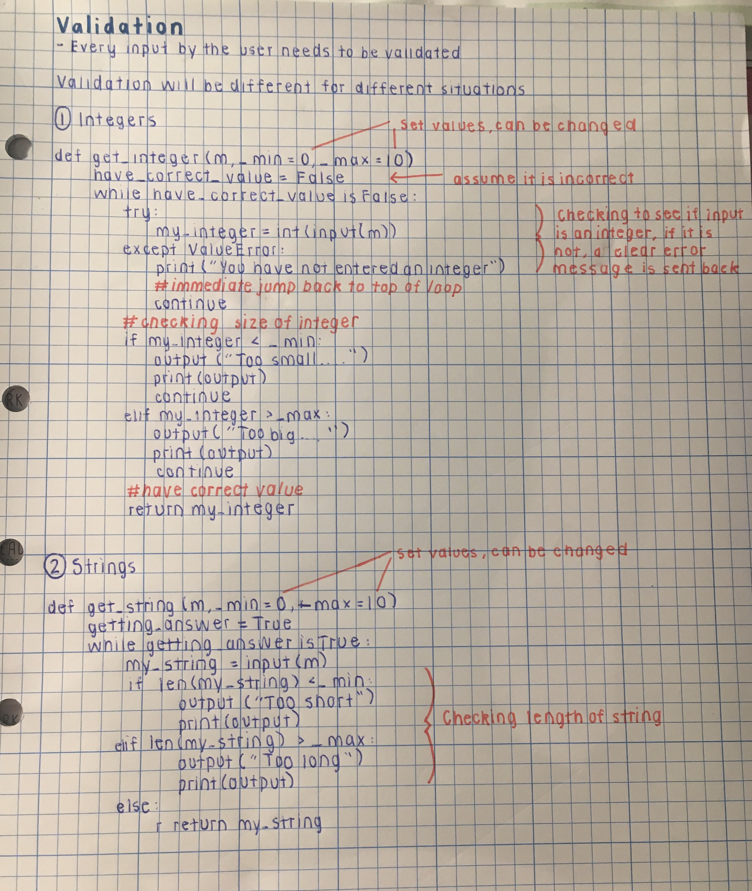Sprint Board
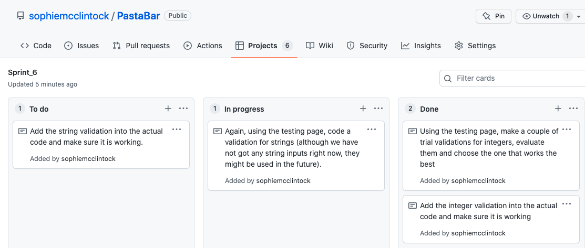Testing Page
The first thing I did on my testing page was trial some different formats for the integer validation. It can be useful to try out some different kind of methods to allow you to work out whichever one works best with your code.
Integer Validation Trials
| Code | Test | |
|---|---|---|
| First Trial |
| 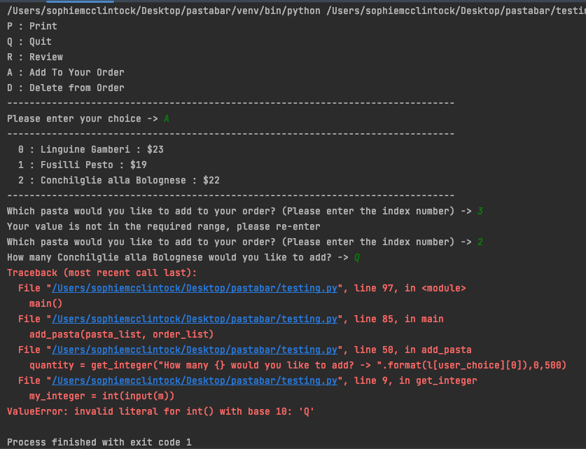 |
| Second Trial |
| 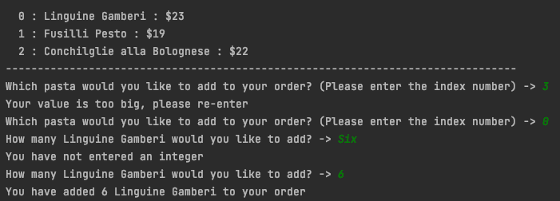 |
Reflection on Trials
The first trial you can see here working well if you were just working with intergers but if you entered a letter or a string, it would crash. For obvious reasons, this would not be benefical to the real code. So for the second trial, I added a Value Error which meant if a letter or string was submitted, it would automatically send a message back saying "You have not entered an integer". This worked a lot better as it meant that the program did not crash. Based on these results, I am planning to use my second trial in the code.
The second validation I worked on the validation for the strings. Although it has also been used once in the code so far, I think it is going to be used in the next few sprints so it is still important to get it working. This was relatively similar to the integer validation, so I completed it in one trial
String Validation Trials
| Code | Test | |
|---|---|---|
| First Trial |
| 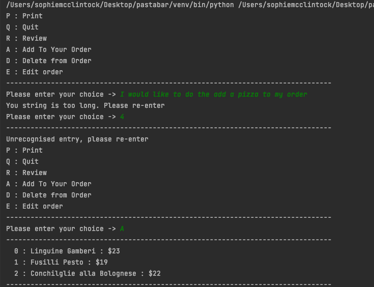 |
Reflection
This version went really well, completing the validation was actually a lot easier than I imagined. I was able to do a validation for the integers, as well as the string, and insert them both into the code, and they work well. Again, I have learnt that having a couple of different options for my trials makes it easier to choose one that works really well and is the most developed. For the next version, I am planning to incorperate a confirm order, so the user can enter their details (name, address and phone number). Again, the biggest problem I need to solve is making sure the users understand what everything means, especially the options on the menu at the start of the code. This is important because if they do not understand, this could really hinder their understanding of the rest of the program.
Midway Project Backlog
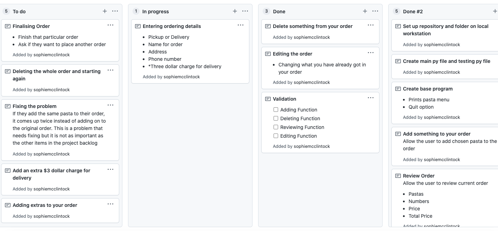Version 6
This version is adding customer details. We can get their name and phone number and find out if they want delivery or pickup. If they want delivery the program can also get their address. This is important because if the customer wants to place an order the program needs to know their details so they can identify them.
Plan
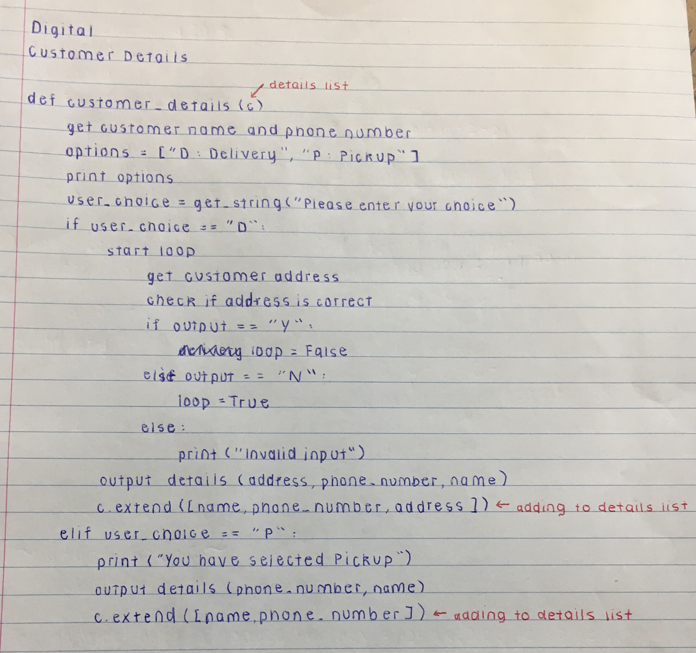Sprint Board
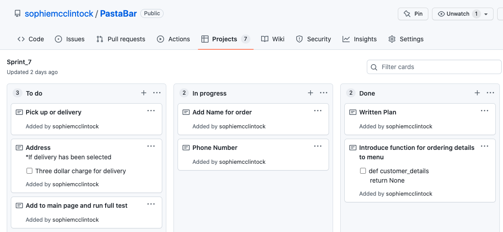Final Code
def customer_details(c):
name = get_string("Can you please enter your name -> ", 0, 50)
phone_number = get_string("Can you please enter your phone number -> ", 0, 15)
print("-"*80)
options = ["D : Delivery", "P : Pickup"]
for x in options:
print(x)
user_choice = get_string("Please enter your choice -> ", 0, 1)
if user_choice == "D":
delivery = True
while delivery is True:
number = get_string("You have selected Delivery. Can you please enter your address. Number -> ", 0, 5)
street = get_string("Street -> ", 0, 50)
suburb = get_string("Suburb -> ", 0, 50)
city = get_string("City -> ", 0, 50)
postcode = get_string("Postcode -> ", 0, 4)
address = "{} {}, {} {} {}".format(number, street, suburb, city, postcode)
output = get_string("Your address is {}. Is this correct? (Please enter Y or N) -> ".format(address), 0, 1)
if output == "Y":
delivery = False
elif output == "N":
delivery = True
output = "Address: {}, Phone Number: {}, Name: {}".format(address, phone_number, name)
c.extend([name, phone_number, address])
print(output)
elif user_choice == "P":
print("You have selected Pickup")
output = "Phone Number: {}, Name: {}".format(phone_number, name)
c.extend([name, phone_number])
print(output)
Tests for the final code
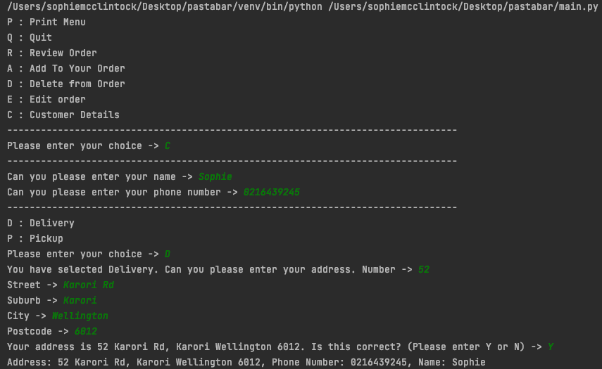Reflection
This sprint was one of the easiest because all I had to do was ask the user for information then add it to the customer details list. The next thing I am going to do is work on finalising the order, and asking the user if they want to place another order. There are a couple of problems that I need to fix but I have put them on the project backlog because I am on a bit of a time crunch and they are not as important at the moment. The main problem is that if the user adds the same pasta to their order, it comes up twice instead of adding on to the original quantity of pasta, but I will fix this a bit further down the track.
Version Seven
This sprint is working on finalising the order. This means, finding out if the order is correct, then asking if they want to place another order and if not, finishing the program. I might have to make a couple of functions throughout this order because it will be easier than trying to combine everything into one order.
Plan
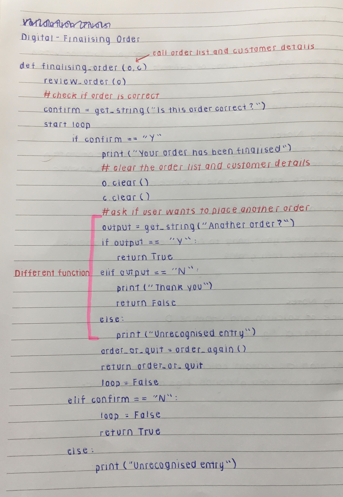Sprint Board
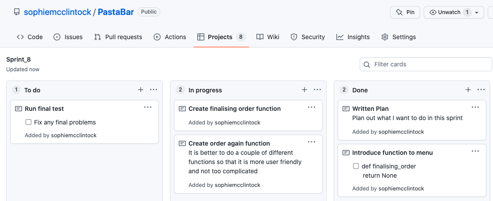Tests
This program took me a bit of time to figure out because there were quite a lot of little components throughout that made it difficult. The first difficulty I found was that if the user had forgotten to enter their customer details, the program crashed. I fixed this by deleting the option to enter their customer details in the menu and instead adding it in the function, once the user had said their order was correct. The image below is of the crash due to this problem.
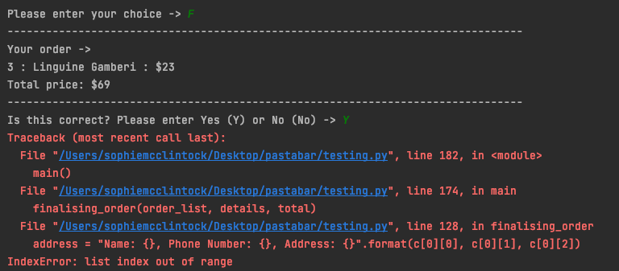Final Code
def finalising_order(o, c):
review_order(o)
confirm = get_string("Is this order correct? Please enter Yes (Y) or No (No) -> ", 0, 1)
correcting_order = True
while correcting_order is True:
if confirm == "Y":
customer_details(c)
print("Your order has been finalised")
o.clear()
c.clear()
order_or_quit = order_again()
return order_or_quit
correcting_order = False
elif confirm == "N":
correcting_order = False
return True
else:
print("Unrecognised entry")
def order_again():
output = get_string("Would you like to place another order? Please enter Yes (Y) or No (No) -> ", 0, 1)
if output == "Y":
return True
elif output == "N":
print("Thank you for ordering your meal. The program will terminate")
return False
else:
print("Unrecognised entry")
Final Test
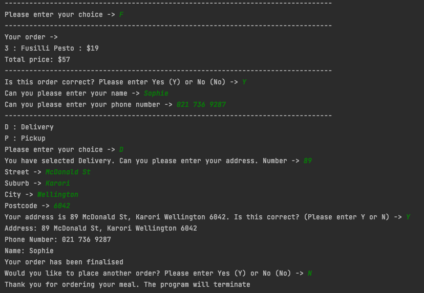Reflection
This sprint was working on finalising the order, asking if what they order was final and if they wanted to place another order. This sprint took a bit longer because there were a few different sections to work out individually before they all worked together. One of the problems I had to sort was what was returned and where the program went from there. For example, if the user said that they wanted to place another order, I had to return True so that it returned to the program but if they said they did not want to place another order, I had to return False so it quit the program. I have learnt that while it makes it a bit more complicated when creating the code, it is a lot better to do a couple of different functions instead of trying to combine it into one function. I think that the next version is going to be fixing all the little problems, like the issue with the double item if you order it twice and adding some little extra details, like a $3 charge for delivery and potenially adding extras to their order. I will also need to do some commenting and DocTyping.
Version Eight
This version is not focuses on something specific, it is more generic, fixing problems and making the program as user friendly as possible.
Board
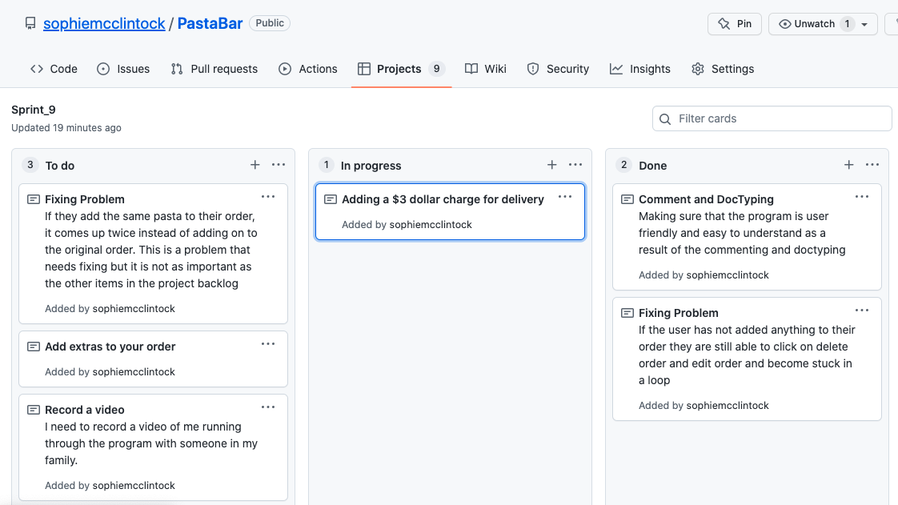Problems
The first problem I need to fix was an issue that affected several functions. If the user has not added anything to their order they are still able to click on delete order, edit order and finalising order and become stuck in a loop. This is very unhelpful because while they are not likely to click on one of these options when they have not added anything to their order, if they make a mistake they could easily get stuck. The test below demonstrates this using the delete function
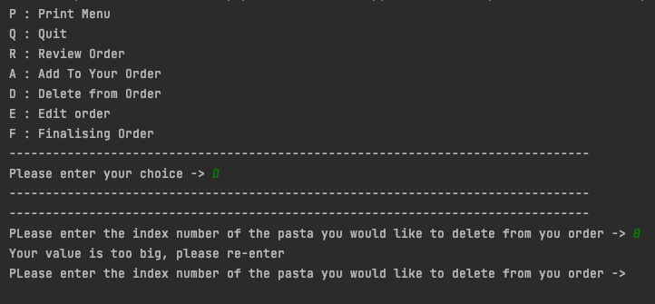Solution
The solution was just that I had to add an if statement at the start of the function that meant if there was nothing in the order, it returned an error message and went back to the main menu. This worked for all three of the functions, edit, delete and finalising. Below you can see the code that I used to fix this problem and well as the result in the program using the delete function again.

if len(o) == 0:
print("You have not added anything to your order")
print("-" * 80)
else:
# continue with rest of code
Video of Code
Project Errors
Py Charm has a function called Problems that allows you to fix any formatting errors in my code. To the right you can see a screenshot of the errors I had before I fixed them. Some examples of issues were that one of the functions I had created was not being used so I could delete it, the variable name was too ambiguous and paticular lines in the code were too long.
Below you can see the same screen when I had fixed majority of the problems. The only problems that I could not fix were the apparent misspellings because the spelling is actually correct, the program just does not recognise it becuase it is in a different language.
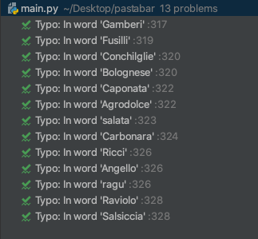What I did on this version
One of the main things I did on this version was lots of commenting and Doctyping, addressing the sustainability and future proofing relevant implication. I also fixed a couple of problems and touched up on the code a bit. One thing I decided to do in this version just to increase the level of the code was to add some more pasta options for the user. I had been using three because it was easier to deal with but now that I am pretty much finished, I have increased the number to eight. Another change that I made was that if the user entered q (quit), I gave them a second chance by double checking if they want to quit, and if they did the would program stop but if they did not then the program returns to the main menu. I also made sure that that there was a final confirmation after the user has entered their details in case they had made a mistake and wanted to add something else to their order. This is important because it means they can back out right up until the last second. One other thing I changed was that I added descriptions for the pasta so that if the user was struggling on what to order, they were able to view the toppings to help their decision. The last thing I did was that I added a three dollar charge when the user selecting delivery. This was part of the requirements for the code.
Addressing Relevant Implications
Usability
Addressing the usability relevant implication means creating validation functions to ensure appropriate entry. This is important because if the user entered an incorrect entry, and I didn't have validation, the program would crash. I want to be able to tell the user what they did wrong and give them another chance to type in the needed input. Another way of ensuring the usability is using a simple menu system, like a home screen for the user. This ensures that while the user can branch out to different functions and complete tasks like adding something to their menu or deleting something, they are also able to return to the menu.
Functionality
Addressing the functionality relevent implication means carrying out systematic testing throughout. This is so important because if there is an error or something is not working, it means we can fix it as soon as possible instead of it potenially becoming a much bigger problem. It is necessary to do a test at the end of each sprint then run a full user test with a real user to test the program under unpredictable conditions. Throughout my planning you can see evidence of tests at the end of each sprint and I have also attached a video running through the code with Mr Khouri. This is so benefical to whole coding experience as it means the coding is less likely to have errors.
Sustainability and Future Proofing
To address the sustainability and future proofing relevant implication I have made sure to use a function based build. This means that each feature is a function and this makes the program so much easier to follow because instead of one big chunk of code, it is split into lots of different functions. For example, in the finalising function, there are a few different functions inside that paticular function, such as collecting the customer details and asking if the customer would like to order again. To ensure the program is future proof I have also done lots of DocTyping and commenting so if the user doesn't understand a certain part of the code, they can just double check the comments.
Reflection
Unfortunately due to the time restriction, I did not manage to complete a few things on my project backlog for this version but it was extra stuff anyway so it did not really matter. If I had had more time on this project, I definitely would attempted to complete some of the extra things on my project backlog, like adding extras to the pasta's. Another problem that I would have fixed if I had more time was the issue that if I added something to order twice it came up as two seperate items. I was not sure how to fix this but if I had more time I probably would have worked out a way around it. The reason this problem was not higher up on my project backlog was because if the user wants to add onto a paticular pasta they can just edit the quantity instead of adding it again. Overall, I am really happy with how this project turned out and even though I didn't quite finish everything I wanted to, I am still pleased with the outcome.